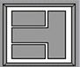
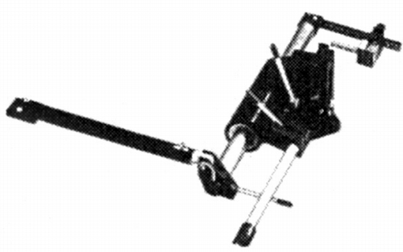
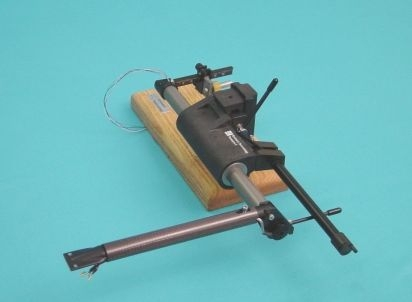
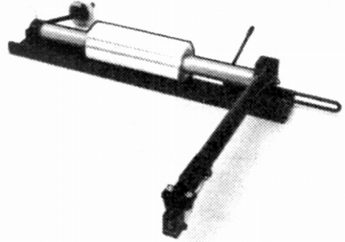
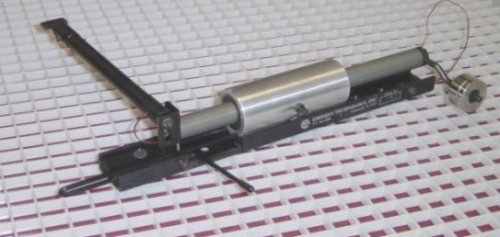
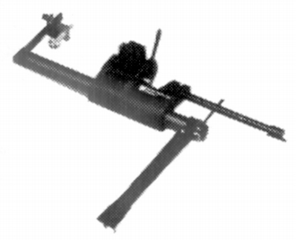
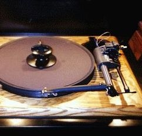

EMINENT TECHNOLOGY（エミネントテクノロジー）
【注意事項】動電平面型スピーカーを扱っていたメーカー。1982年に創立のようだ。リニアトラッキング型のアームが紹介された。当初の代理店はユニコエレクトロニクス、1995年頃にはナイコム・コーポレーションとなっている。現在も存続し、アームを販売しているようだ。
Tonearm 2


■価格 180,000円
■型式 リニアトラッキング型
■全長 �o
■実行長 178�o
■オーバー・ハング
■トラッキングエラー
■針圧範囲
■アーム高さ
■アームベース穴
■アンチスケートディバイス
■アームリフター あり
■ラテラルバランサー
■カートリッジ自重
■線間容量
■発売 1985年
■販売終了 年頃
■備考 価格は1985年頃のもの
1993年頃は240,000円
1999年頃は360,000円
バーチカル・トラッキングアングル調整機構あり
アームパイプ交換式、エアベアリング方式採用、エアポンプ付属。
別売りアームパイプ（カウンターウェイトアッセンブリー付き 26,000円)あり。
Model 1


■価格 207,000円
■型式 リニアトラッキング型
■全長
■実行長 178�o
■オーバー・ハング
■トラッキングエラー
■針圧範囲
■アーム高さ
■アームベース穴
■アンチスケートディバイス
■アームリフター あり
■ラテラルバランサー
■カートリッジ自重 0〜12.0g、0〜20（別売ウェイト使用時）
■線間容量
■発売 1981年
■販売終了 1988年頃
■備考 価格は1985年頃のもの
エアベアリング方式採用、エアポンプ付属
プレイヤー別スペーサー（AR,LINNなど）あり。
別売りヘッドシェル（8,000円)あり。
Model 2.5


■価格 520,000円
■型式 リニアトラッキング型
■全長
■実行長 187�o
■オーバー・ハング
■トラッキングエラー
■針圧範囲
■アーム高さ
■アームベース穴
■アンチスケートディバイス
■アームリフター あり
■ラテラルバランサー
■カートリッジ自重
■線間容量
■発売 1996年
■販売終了 年頃
■備考 価格は1999年頃のもの
エアベアリング方式採用、エアポンプ付属